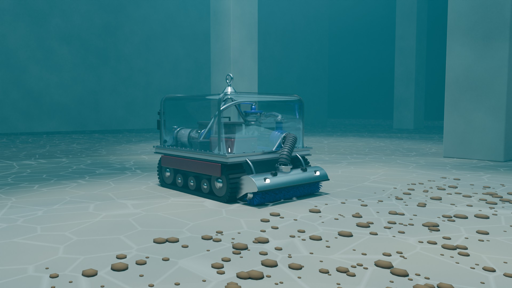
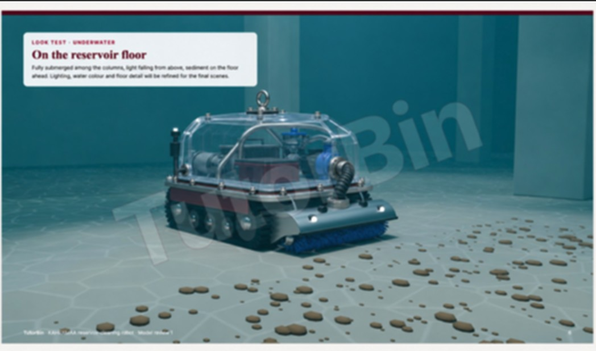
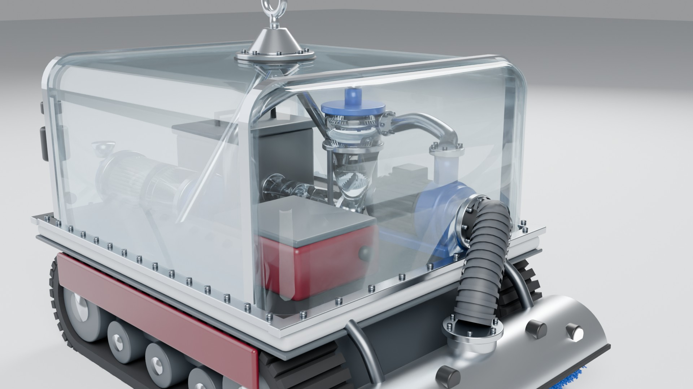
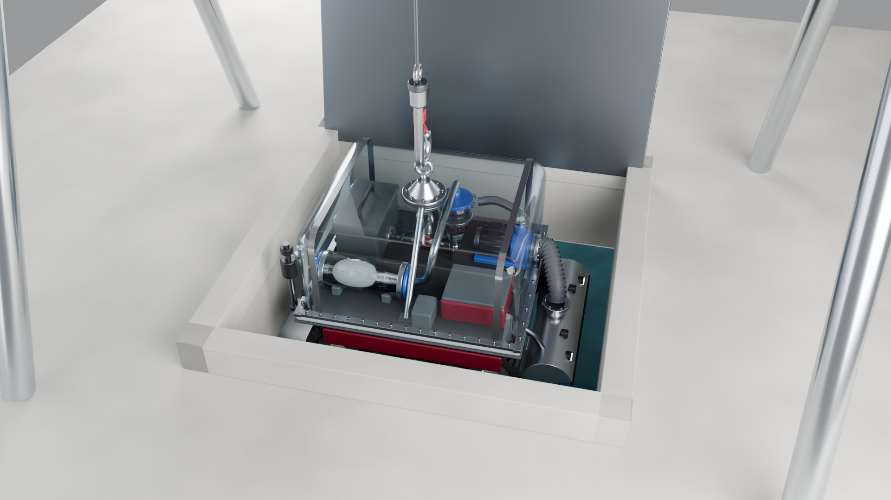
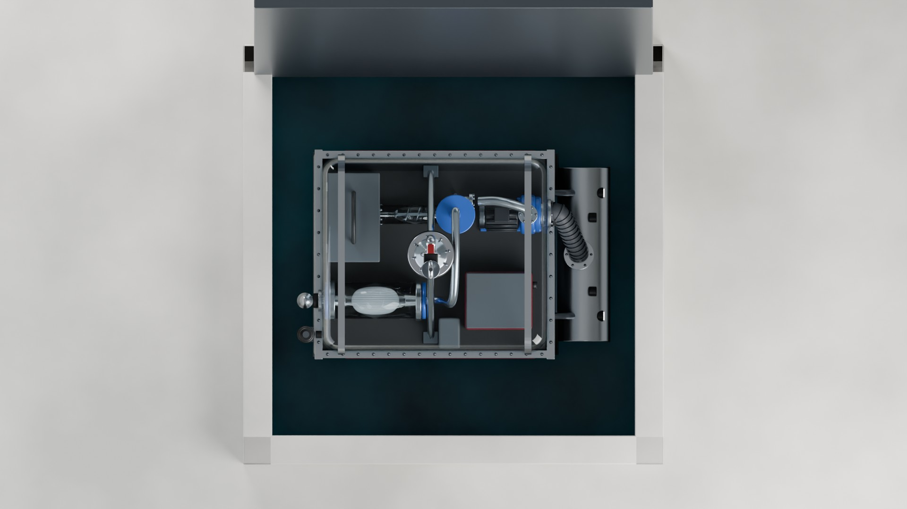
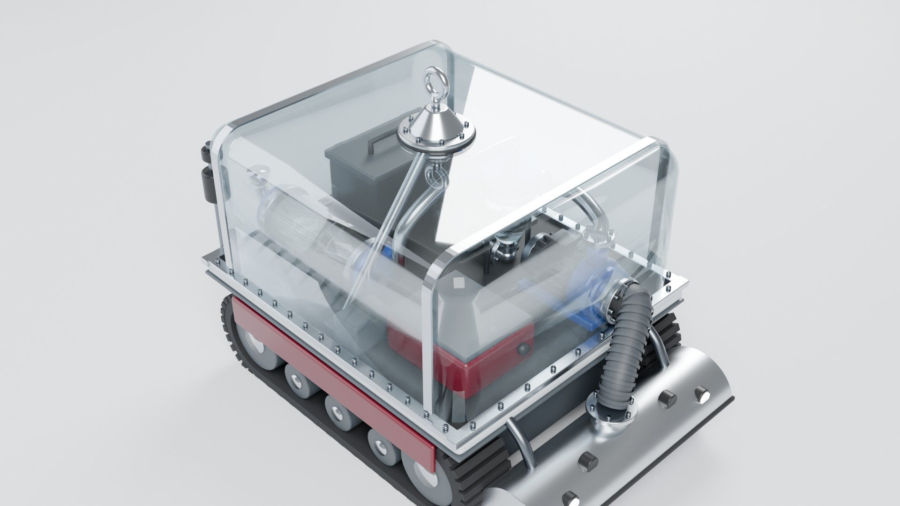
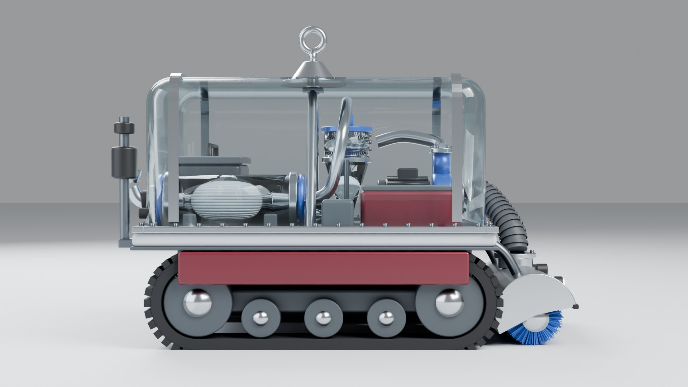
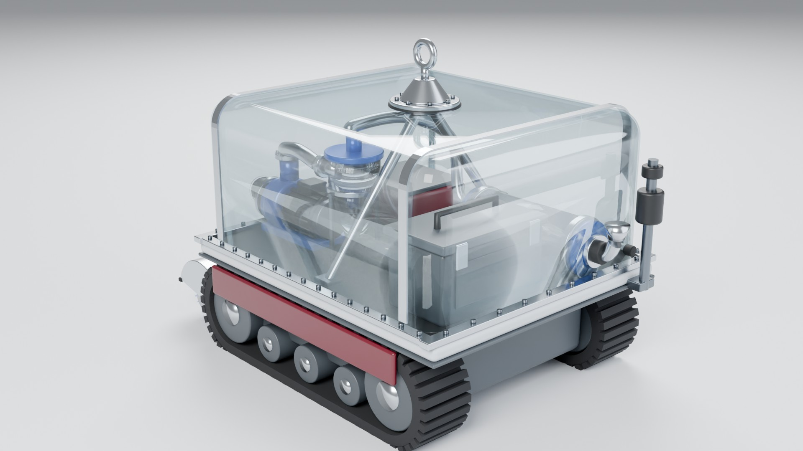
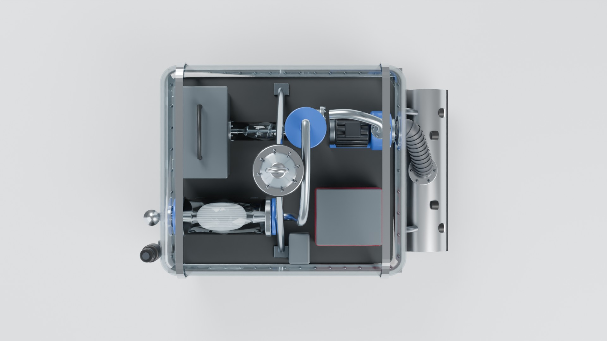
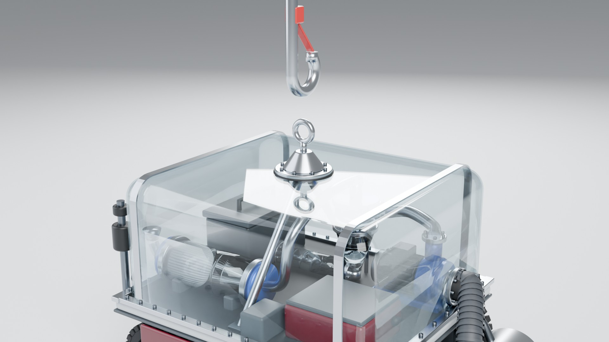

Updated with your comments on review 1: a transparent waterproof cover over the top components, and more room around the robot when it passes the 1 m × 1 m hatch.
Arrangement, colours and lifting point are kept as you approved. Renders are stills from the real 3D scene (Blender, path-traced).
TutorBin · KAHRAMAA reservoir-cleaning robot · Model review 21
TutorBin
Your comments → what changed
Review 1 feedback, applied

Model v3 on the reservoir floor

Your mock-up
We followed your mock-up: a rounded clear box over the deck with a steel rim, the lifting eye on top, and the sensor mast and suction hose outside the box.
1
Component arrangement kept
Same Concept C1 layout, unchanged.
2
Look and colours kept
Same design and colours.
3
Lifting point · hatch space
Room all round in the hatch
Robot sized to the 900 × 650 mm envelope and centred under the hook: it now clears the 1 m opening on all four sides (page 4).
4
Anything missing
Transparent waterproof cover
Clear polycarbonate cover sealed on a bolted flange with a gasket, clamp straps, and sealed glands wherever a pipe, cable or the lifting post passes through. All components stay visible (page 3).
TutorBin · KAHRAMAA reservoir-cleaning robot · Model review 22
TutorBin
Transparent waterproof cover
Sealed at every edge and connection

In the cleaning and filtration scenes the camera looks straight through the cover, so the slurry and clean-water paths stay easy to follow.
TutorBin · KAHRAMAA reservoir-cleaning robot · Model review 23
TutorBin
Deployment through the hatch
Not touching the hatch: room on all sides

Passing the 1 m × 1 m hatch on the winch

Looking straight down through the hatch
The robot is now built to the 900 × 650 mm envelope from your parameter table (about 0.86 m × 0.58 m overall) and hangs centred under the hook, so it passes the opening without touching the frame.
Clearance in the opening: about 7 cm at each end and about 21 cm at each side. The bell guide and eye bolt stay at the centre of the robot for a level, stable lift.
These measurements are for your review only. As agreed, no dimensions appear in the video.
TutorBin · KAHRAMAA reservoir-cleaning robot · Model review 24
TutorBin
Component arrangement (as approved)
Every part stays visible through the cover

TutorBin · KAHRAMAA reservoir-cleaning robot · Model review 25
TutorBin
All sides
Side, rear, top and the docking eye

Side · suction hood at the front (right)

Rear · sealed return gland, sensor mast outside the cover

Top

Hook approaching the docking eye
TutorBin · KAHRAMAA reservoir-cleaning robot · Model review 26
TutorBin
Look test · underwater
Sealed and submerged
The clear cover reads as a sealed, waterproof enclosure on the reservoir floor, with the pump, separator and filter still visible inside. Lighting, water colour and floor detail will be refined for the final scenes.
TutorBin · KAHRAMAA reservoir-cleaning robot · Model review 27
TutorBin
Please confirm
Two quick checks, then we animate
Model v3 · sealed and submerged
TutorBin · KAHRAMAA reservoir-cleaning robot · Model review 28